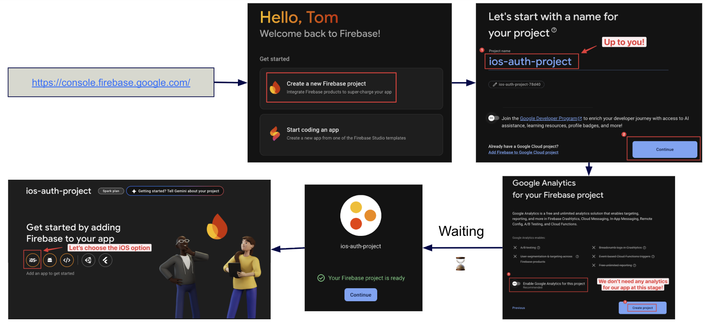
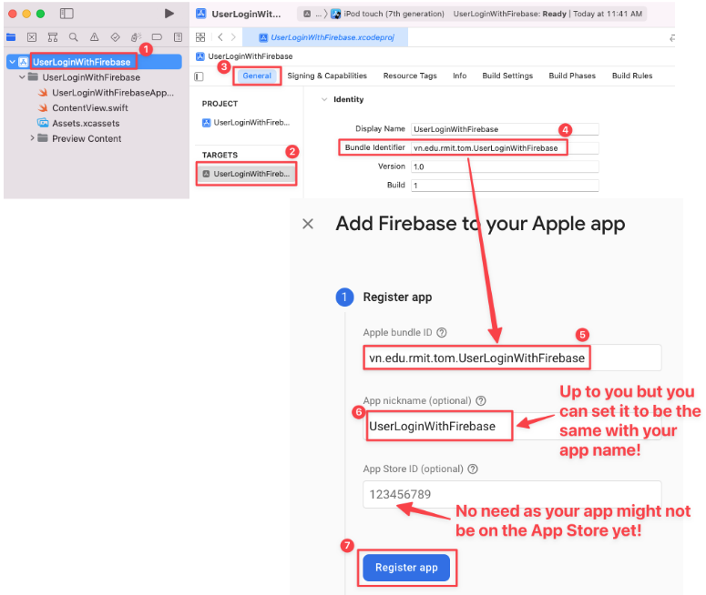
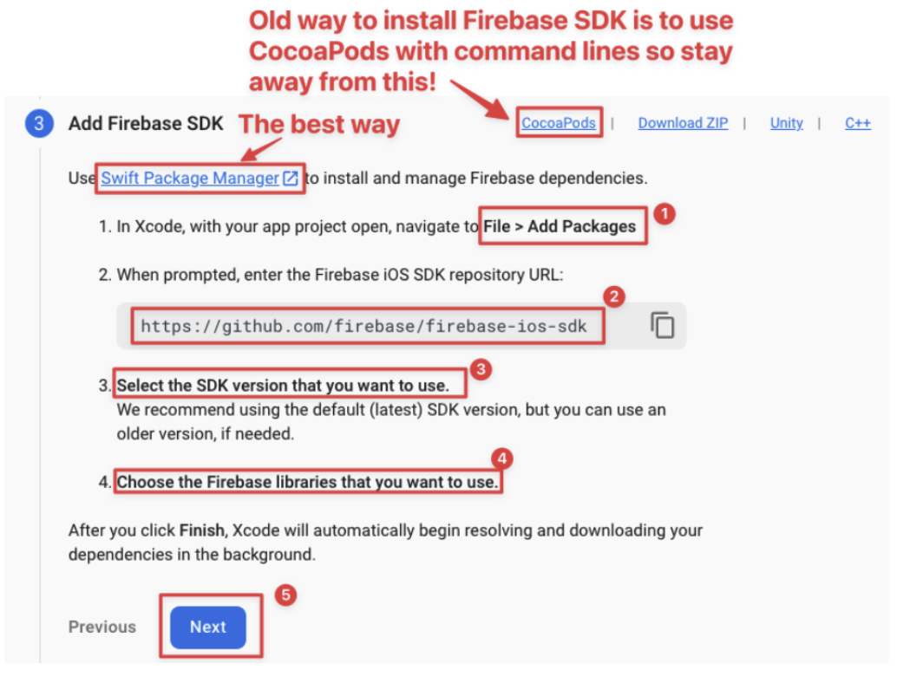
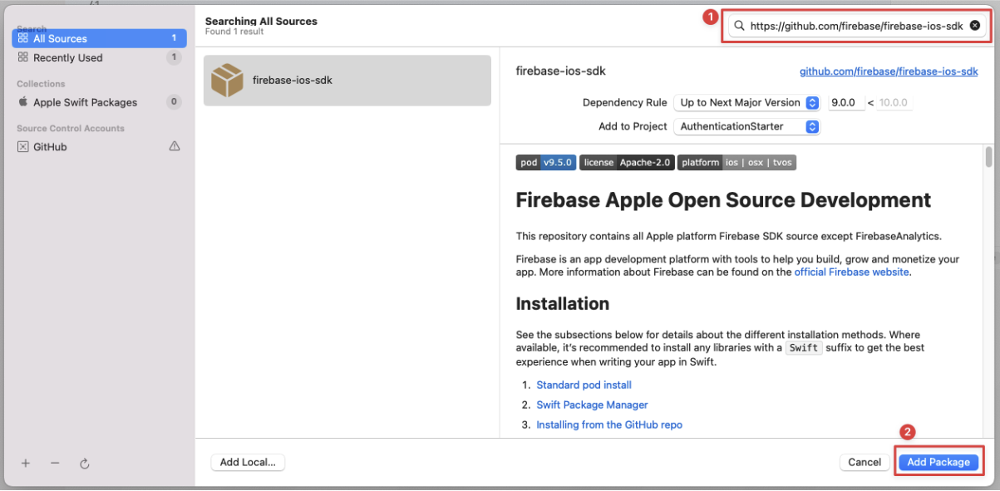
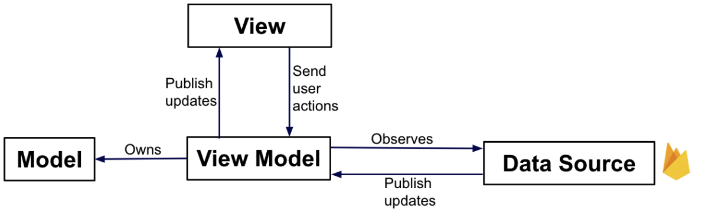
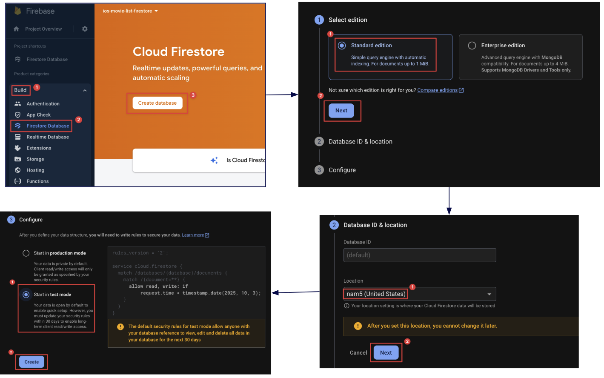
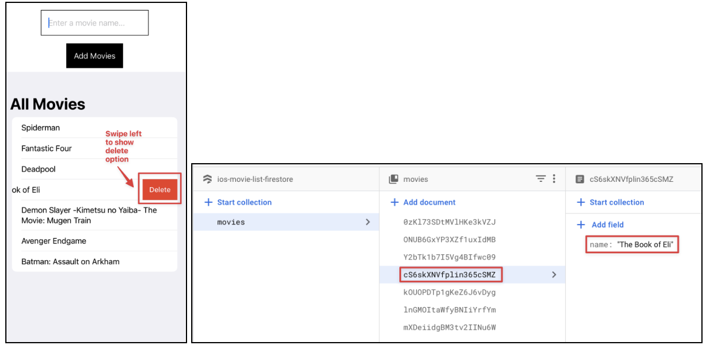
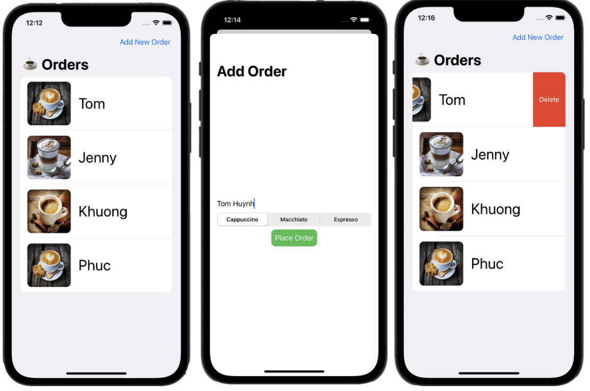

🚀 Task 1: Setup Firebase Project
Objective
To setup and configure a Firebase project to be used in your iOS app projects.
What is Firebase?
Firebase is a platform developed by Google for creating mobile and web applications. It provides a suite of tools that developers can use to build high-quality apps, grow their user base, and earn more money. For iOS developers, it's particularly useful for backend services like authentication, databases, file storage, and more, without needing to manage servers yourself.
0. Follow the lecture slides of this week for the comprehensive visual guide.
1. Create a new project in Firebase ➕
2. Register Firebase App 📱
Use your bundle identifier in your Xcode project to register as Apple bundle ID in the Firebase app registration.
3. Add Config Firebase file to the XCode Project ⚙️
This GoogleService-Info.plist file contains all the necessary keys and identifiers for your app to connect to your specific Firebase project. It's unique to your app.
Security Note 🔒
Treat the GoogleService-Info.plist file as a sensitive file. It contains your project's API keys. While it's needed in your app bundle, you should not commit it to public source control repositories. A common practice is to add it to your .gitignore file.
4a. Add firebase SDK as a package in the Xcode project 📦
4b. Install Firebase iOS SDK with Swift Package Manager SPM
4c. Choose the packages of Firebase you need! ✅
Depending on what Firebase services your app use, please select them accordingly:
- Firebase Auth provides many methods and utilities for enabling you to integrate secure authentication into your application.
- Firebase Database (Realtime Database) provides a simple, efficient NoSQL cloud database which is synced across all clients in real time. It's structured as one large JSON tree.
- Firebase Firestore provides a more flexible, scalable NoSQL database from Firebase and Google Cloud. It stores data in documents, which are organized into collections, allowing for more complex queries than the Realtime Database. For most new projects, Firestore is the recommended choice.
- Firebase Storage provides simple storage for uploading and downloading user-generated content like images and videos.
5. Add Initialization Code: ✍️
We need to integrate the initialization directly within the App structure's init method. This method is more streamlined and suits a SwiftUI-centric approach.
import SwiftUI
import Firebase
@main
struct YourApp: App {
init() {
FirebaseApp.configure()
}
var body: some Scene {
WindowGroup {
ContentView()
}
}
}6. That's it! 🎉 We have now set up everything to use Firebase services in our app.
🔐 Task 2: Setup Firebase Authentication
Objective
To setup and configure a Firebase authentication just like in the lecture example in this Github repo: https://github.com/TomHuynhSG/User-Authentication-iOS-Firebase.
Step 0: Make sure the we setup authentication service on Firebase properly: ✅
Firebase Authentication provides backend services, easy-to-use SDKs, and ready-made UI libraries to authenticate users to your app. It supports authentication using passwords, phone numbers, popular federated identity providers like Google, Facebook and Twitter, and more.
- In the Firebase Console, we need to enable the authentication feature. For this example, we'll enable the "Email/Password" sign-in method.
- Create a test user to test authentication
Step 1: Make sure the GoogleService-Info file is in the project directory: 📁
Step 2: Make sure Initialization code is ready: 🚀
import SwiftUI
import Firebase
@main
struct UserLoginWithFirebaseApp: App {
init() {
FirebaseApp.configure()
}
var body: some Scene {
WindowGroup {
ContentView()
}
}
}Step 3: Create a new "SignUpView" SwiftUI file for the sign-up (register) page: 📝
import SwiftUI
import Firebase
struct SignUpView: View {
// The @Environment property wrapper gives us access to values stored in the view's environment.
// \.dismiss is an action that allows us to programmatically dismiss a view that was presented, like a sheet.
@Environment(\.dismiss) var dismiss
@State var email = ""
@State var password = ""
@State var passwordConfirmation = ""
@State var signUpSuccess = false
var body: some View {
VStack{
Spacer()
// Sign up fields to sign up for a new account
Group {
TextField("Email", text: $email)
.padding()
.background(.thinMaterial)
.cornerRadius(10)
.textInputAutocapitalization(.never)
SecureField("Password", text: $password)
.padding()
.background(.thinMaterial)
.cornerRadius(10)
SecureField("Confirm Password", text: $passwordConfirmation)
.padding()
.background(.thinMaterial)
.cornerRadius(10)
.border(Color.red, width: passwordConfirmation != password ? 1 : 0)
.padding(.bottom, 30)
}
// Sign up button
Button(action: {
signUp()
}) {
Text("Sign Up")
.bold()
.frame(width: 360, height: 50)
.background(.thinMaterial)
.cornerRadius(10)
}
// Sign up message after pressing the sign up button
if signUpSuccess {
Text("Sign Up Successfully! ✅")
.foregroundColor(.green)
} else {
Text("Not Sign Up Successfully Yet! ❌")
.foregroundColor(.red)
}
Spacer()
// Button to dismiss the sign up sheet and go back to the sign in page
Button {
dismiss()
} label: {
Text("Back to Sign In Page")
}
Spacer()
}
}
// Sign up function to use Firebase to create a new user account in Firebase
func signUp() {
// This is an asynchronous network call to Firebase.
// The code inside the closure { ... } will be executed when the network request completes.
Auth.auth().createUser(withEmail: email, password: password) { authResult, error in
if let error = error {
// If there's an error (e.g., email already in use, weak password), print it.
print(error.localizedDescription)
signUpSuccess = false
} else {
// If the user was created successfully, the error will be nil.
print("User created successfully!")
signUpSuccess = true
}
}
}
}Step 4: Modify the “ContentView” SwiftUI file for the sign-in (login in) page: 💻
import SwiftUI
import Firebase
struct ContentView: View {
@State var email = ""
@State var password = ""
@State var loginSuccess = false
@State private var showingSignUpSheet = false
var body: some View {
VStack {
Spacer()
// Login fields to sign in
Group {
TextField("Email", text: $email)
SecureField("Password", text: $password)
}
// Login button
Button {
login()
} label: {
Text("Sign in")
.bold()
.frame(width: 360, height: 50)
.background(.thinMaterial)
.cornerRadius(10)
}
// Login message after pressing the login button
if loginSuccess {
Text("Login Successfully! ✅")
.foregroundColor(.green)
} else {
Text("Not Login Successfully Yet! ❌")
.foregroundColor(.red)
}
Spacer()
// Button to show the sign up sheet
Button {
showingSignUpSheet.toggle()
} label: {
Text("Sign Up Here!")
}
}
.padding()
.sheet(isPresented: $showingSignUpSheet) {
SignUpView()
}
}
// Login function to use Firebase to check username and password to sign in
func login() {
// Similar to signUp, this is an asynchronous call.
Auth.auth().signIn(withEmail: email, password: password) { (result, error) in
if let error = error {
// If there's an error (e.g., wrong password, user not found), print it.
print(error.localizedDescription)
loginSuccess = false
} else {
// If login is successful, the error will be nil.
print("Login successful!")
loginSuccess = true
}
}
}
}Step 5: Test the sign-up and sign-up features and confirm those accounts in the Firebase Auth Page: 🧪
- Try to sign up to create a new account and later on sign in to log in the app:
- Also, you can check out these accounts in real time in the Firebase Authentication page:
☁️ Task 3: Setup Firebase Cloud Firestore
Objective
To setup and configure a Firebase Cloud Firestore just like in the lecture example in this Github repo: https://github.com/TomHuynhSG/Movie-List-Firestore-iOS-Firebase
Ideally, we would like to setup our project with MVVM architecture pattern:
Understanding MVVM
The Model-View-ViewModel (MVVM) pattern helps us separate our code into three distinct roles:
- Model: Represents the data and the business logic. It's the source of truth for your app's data (e.g., a
Moviestruct). - View: The UI. It's responsible for displaying the data from the ViewModel and capturing user input. In SwiftUI, this is your
ContentView. The View should be as "dumb" as possible. - ViewModel: Acts as a bridge between the Model and the View. It holds the application's state and presentation logic. It formats the data from the Model in a way that the View can easily display, and it handles user actions from the View.
This separation makes your code easier to test, maintain, and reason about as your app grows in complexity.
Step 0: Make sure the we setup firestore service on Firebase properly: ✅
Step 1: Create a Collection & Document in Firestore 📂
Cloud Firestore is a NoSQL document database. Unlike traditional SQL databases with tables and rows, Firestore stores data in documents, which are organized into collections.
- A Collection is like a folder that holds documents. For example, you could have collections for
users,movies, orproducts. - A Document is a set of key-value pairs, similar to a JSON object. It's where you store your actual data. Each document has a unique ID within its collection.
For this task, you will:
- Create a "movies" Collection.
- Create a document within that collection to hold information about the movie "Deadpool".
Step 2a: Overall, we need to setup “read” and “write” to Firestore: ↔️
- Import & create a firestore object to initialize the connection to Firestore database.
import FirebaseFirestore var db = Firestore.firestore() - Read from Firestore:
- Retrieve a collection
- Loop documents in the collection.
- Extract the data from each field from each document.
// Retrieve the "movies" collection db.collection("movies").addSnapshotListener { (querySnapshot, error) in guard let documents = querySnapshot?.documents else { print("No documents") return } // Loop to get the "name" field inside each movie document self.movies = documents.map { (queryDocumentSnapshot) -> Movie in let data = queryDocumentSnapshot.data() let name = data["name"] as? String ?? "" return Movie(name: name) } } - Write to Firestore:
// add a new document of a movie name in the "movies" collection db.collection("movies").addDocument(data: ["name": name])
Step 2b: Let's do it step by step! Firstly, let's create a new Movie swift file as our Model: 🧱
import Foundation
struct Movie: Codable, Identifiable {
var id: String = UUID().uuidString
var name: String?
}Step 2c: Secondly, let's create a new MovieViewModel swift file as our ViewModel for the movies: 🧠
import Foundation
import FirebaseFirestore
class MovieViewModel: ObservableObject {
@Published var movies = [Movie]()
private var db = Firestore.firestore()
init() {
getAllMovieData()
}
func getAllMovieData() {
// addSnapshotListener sets up a real-time listener on the "movies" collection.
// This means that whenever data is added, changed, or removed in this collection on the server,
// this code block will automatically be re-executed with the updated data.
// This is what makes Firestore so powerful for building reactive, real-time applications.
db.collection("movies").addSnapshotListener { (querySnapshot, error) in
guard let documents = querySnapshot?.documents else {
print("No documents")
return
}
// We use .map to transform the array of Firestore documents into an array of our `Movie` model objects.
self.movies = documents.map { (queryDocumentSnapshot) -> Movie in
let data = queryDocumentSnapshot.data()
let name = data["name"] as? String ?? ""
return Movie(name: name)
}
}
}
func addNewMovieData(name: String) {
// add a new document of a movie name in the "movies" collection
db.collection("movies").addDocument(data: ["name": name])
}
}Step 2d: Secondly, let's create a ContentView SwiftUI file so that users can have a text field to add a movie and see what movies are in the firestore already: 🖥️
import SwiftUI
struct ContentView: View {
@State private var movie: String = ""
// @StateObject is a property wrapper used to create and manage the lifecycle of a reference type (like our ViewModel) within a view.
// SwiftUI ensures that this ViewModel instance is created only once for the lifetime of the view and is not destroyed during view updates.
@StateObject private var movieViewModel = MovieViewModel()
var body: some View {
VStack{
// input field for a movie name
TextField("Enter a movie name...", text: $movie)
.padding()
.border(.black)
.frame(width: 230, height: 40, alignment: .leading)
.padding()
// button to add a movie
Button {
self.movieViewModel.addNewMovieData(name: movie)
} label: {
Text("Add Movies")
.padding()
.foregroundColor(.white)
.background(Color.black)
}
// List of all movies name fetched from firestore
NavigationView {
List {
ForEach(movieViewModel.movies, id: \.id) { movie in
Text(movie.name ?? "")
}
}
.navigationTitle("All Movies")
}
}
}
}Step 3: Test the app and check the documents in the movie collection in real time on the firestore website: 🧪

Hints: The full solution code is here: https://github.com/TomHuynhSG/User-Authentication-iOS-Firebase
🗑️ Task 4: Add a Delete Feature
Objective
To modify this Firestore app example so that it allows users to delete movie as well: https://github.com/TomHuynhSG/Movie-List-Firestore-iOS-Firebase
Overall, To add the functionality to remove movies from the list, you can do the following:
- Add a method in MovieViewModel to remove a movie by its document ID.
- Modify the existing Movie struct to include a property for the document ID.
- Update the getAllMovieData method to map the document ID as well when creating a Movie object.
- Add a swipe onDelete in the list view in ContentView, which calls the remove movie method when clicked.
Step 1: Update Movie Struct. Add a documentID property to store the Firestore document ID: 🧱
struct Movie: Codable, Identifiable {
var id: String = UUID().uuidString
var name: String?
var documentID: String?
}Step 2: Update MovieViewModel. Add a method to remove a movie by its Firestore document ID: 🧠
func removeMovieData(documentID: String) {
db.collection("movies").document(documentID).delete { (error) in
if let error = error {
print("Error removing document: \(error)")
} else {
print("Document successfully removed!")
}
}
}Step 3: Update the getAllMovieData method to include the document ID: 🔄
func getAllMovieData() {
// The same code as before
self.movies = documents.map { (queryDocumentSnapshot) -> Movie in
// The same code as before
let name = ...
// each returned movie document includes the document ID as well
return Movie(name: name, documentID: queryDocumentSnapshot.documentID)
}
}Step 4: SwiftUI provides built-in functionality to add swipe actions to list items. You can use the onDelete(perform:) modifier to add swipe to delete functionality: 🗑️
The .onDelete modifier can be attached to a ForEach loop within a List. When a user swipes to delete a row, SwiftUI provides an IndexSet containing the positions of the rows to be deleted. We can then use this information to identify the correct document in our database and delete it.
// In ContentView.swift
// List of all movies name fetched from firestore
NavigationView {
List {
ForEach(movieViewModel.movies, id: \.id) { movie in
Text(movie.name ?? "")
}
.onDelete(perform: removeMovie)
}
.navigationTitle("All Movies")
}
func removeMovie(at offsets: IndexSet) {
for index in offsets {
if let documentID = movieViewModel.movies[index].documentID {
movieViewModel.removeMovieData(documentID: documentID)
}
}
}Explanation:
- We have modified the List to use a ForEach so we can attach the onDelete(perform:) modifier which provides swipe to delete functionality.
- When a swipe to delete action is triggered, the removeMovie function is called with the indices of the items to be deleted. It then calls removeMovieData(documentID:) to remove each movie from Firestore.
This should give you a "swipe to delete" functionality on each item in the list.
Step 5: Test the app by trying to delete some of the existing movies and check the documents got deleted in real time on the Firestore website: 🧪
Hints: The full solution code is here: https://github.com/TomHuynhSG/Movie-List-Firestore-iOS-Firebase/tree/add-delete-feature
🧩 Task 5: Combine Two Apps into One
Objective
Given these two Github repo so far which each uses different Firebase services like Authentication (sign-up and sign-in) and Cloud Firestore (NoSQL Real-time Database), please figure out a way to combine two these example apps together into one single app!
- https://github.com/TomHuynhSG/Movie-List-Firestore-iOS-Firebase
- https://github.com/TomHuynhSG/User-Authentication-iOS-Firebase
Indeed, when users open the app, instead of going straight into the Movie List view, users are welcomed with a sign-in view and have the option to sign-up if they have not had any account yet. Once they sign up and sign in successfully then they can navigate to the Movie List view where users can add movies or browse a list of movies.
- Before login, users can sign up and sign in:
- After signing in, users now can add movies, browse movies or delete movies.
Note, the nice thing is that many users on their own devices (iPhones) can sign up, sign in, add movies and browse movies at the same time! Also, the movie list is somewhat synchronized between different users.
Here are the general steps:
- Go to the Firebase Console and create a new project.
- Inside your project, add a new iOS app. Follow the on-screen instructions.
- Download the GoogleService-Info.plist file and drag it into the root of each Xcode project.
- In the Firebase Console, go to the Authentication section, click "Sign-in method," and enable the Email/Password provider.
- In the Firebase Console, go to the Firestore Database section and click "Create database." Start in Test Mode for now (this allows anyone to read/write, which is fine for learning).
- Run the projects in Xcode. They should now connect to your Firebase backend, and you can start signing up users and adding movies.
Hints: 💡
- After a user logs in with Firebase Authentication, you can get their unique user ID:
let uid = Auth.auth().currentUser?.uid. - When you save data to Firestore, you would change the path to include that user's ID. Instead of saving to a general "movies" collection, you would save to a user-specific one:
This creates a structure where each user has their own private "movies" collection nested under their unique ID. This is a fundamental concept in multi-user app design. It ensures data privacy (users can only access their own movies) and makes your database queries more efficient, as you only ever need to fetch data for the currently logged-in user.// A common and excellent pattern if let uid = Auth.auth().currentUser?.uid { db.collection("users").document(uid).collection("movies").addDocument(data: ["name": "My Favorite Movie"]) }
🏆 Bonus Challenge: Build a Coffee Order App ☕
Objective
For today's lab, you will build a coffee app to order coffee. The data of the order must be persistent which means the data will be intact even if you close the app and launch it again!
For the data persistence, you need to use either UserDefaults, or Firebase; or the combination of two of them.
Your task:
You need to build the following coffee order app as following:
Features:
- Minimum three views: one for displaying the list of coffee orders, one for adding a new coffee order, and one for displaying the detailed information of an order.
- Each type of coffee has its own distinct image showing on the coffee order list.
- Also, you can delete an order by swiping left on the order you want to delete and press delete.
- The design of your app could be different from the sample screenshots so feel free to be creative and make something different!
Requirements:
- Build this coffee app using appropriate different ways of data persistence to store the coffee order details:
- UserDefaults
- Firebase
Note: for Firebase, you need to use your own personal gmail account as it is not possible to use the RMIT account to use Firebase service.
Helpful Materials:
- An example of using Firestore of Firebase: https://github.com/TomHuynhSG/movie-list-firestore-ios-firebase
- An example of using Firebase authentication: https://github.com/TomHuynhSG/user-authentication-ios-firebase
- An example of using UserDefaults: https://github.com/TomHuynhSG/RMIT-casino
- Firebase documentation for iOS: https://firebase.google.com/docs/ios/setup
- Firebase iOS SDK: https://github.com/firebase/firebase-ios-sdk
- UserDefault guide: Lecture 8 - RMIT Casino part 2
- Firebase guide: Lecture 10 - Data Persistence with Firebase
- Picker view component: